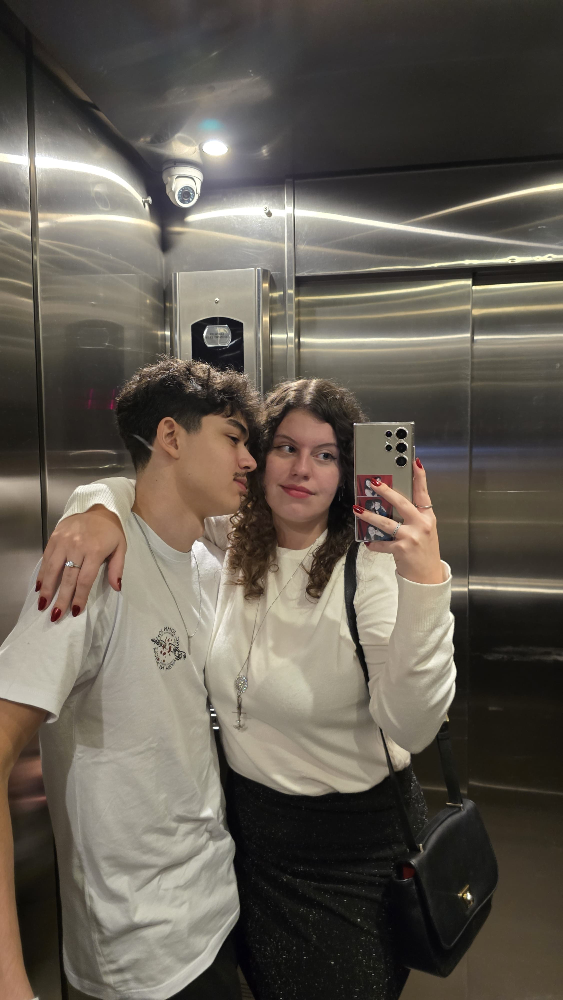
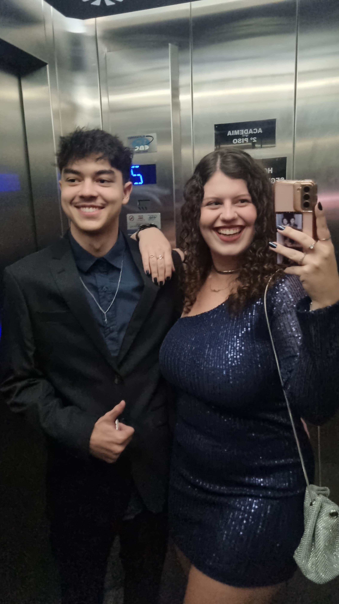
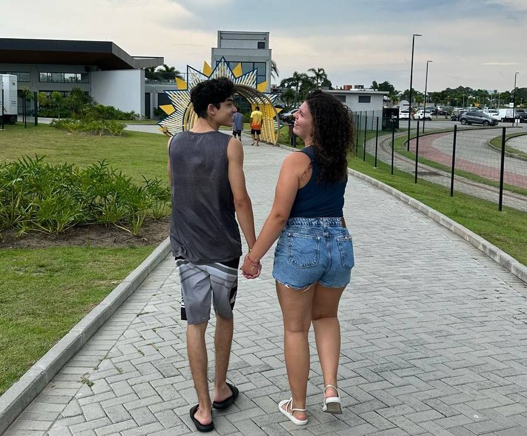
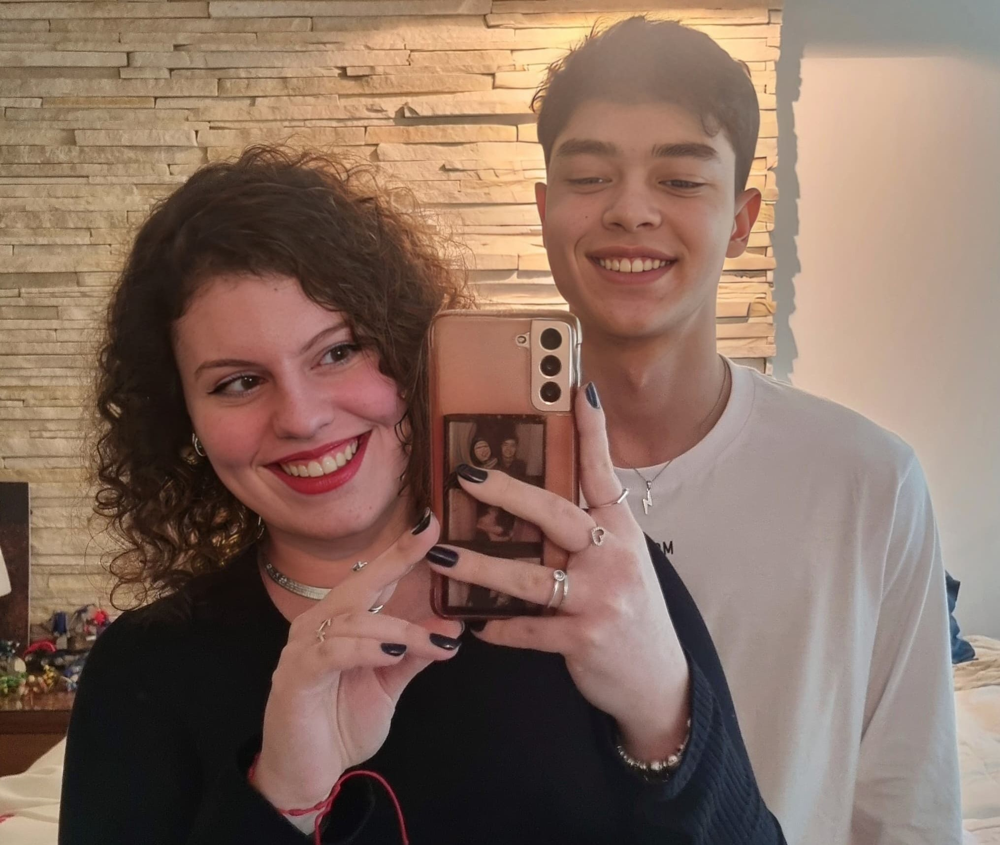
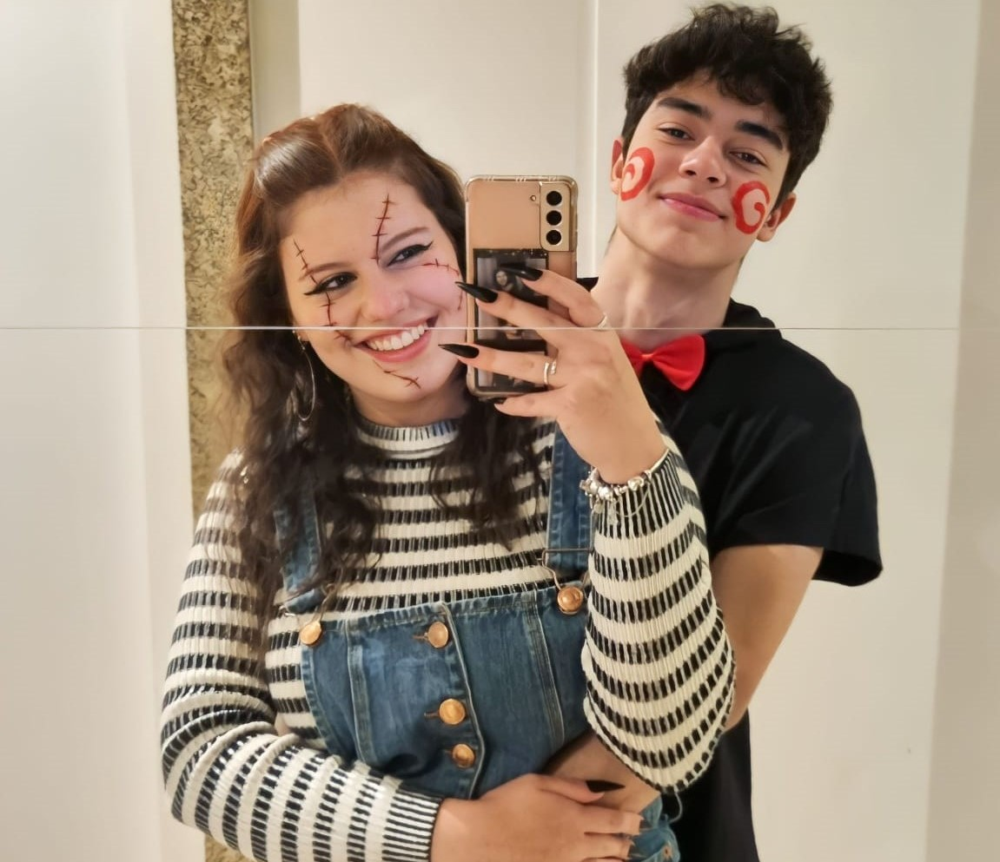
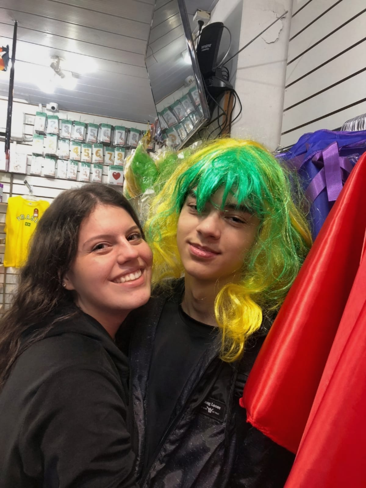
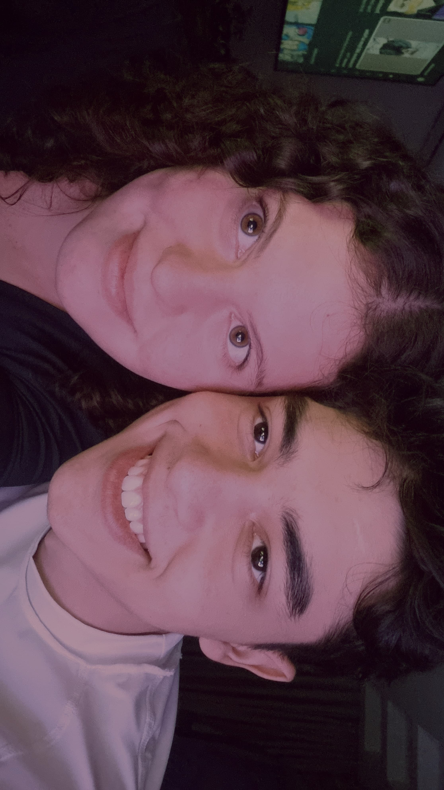
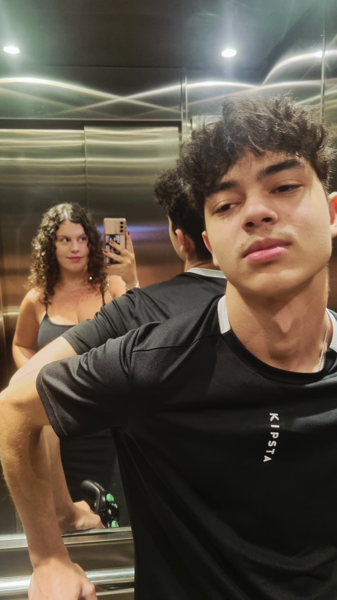
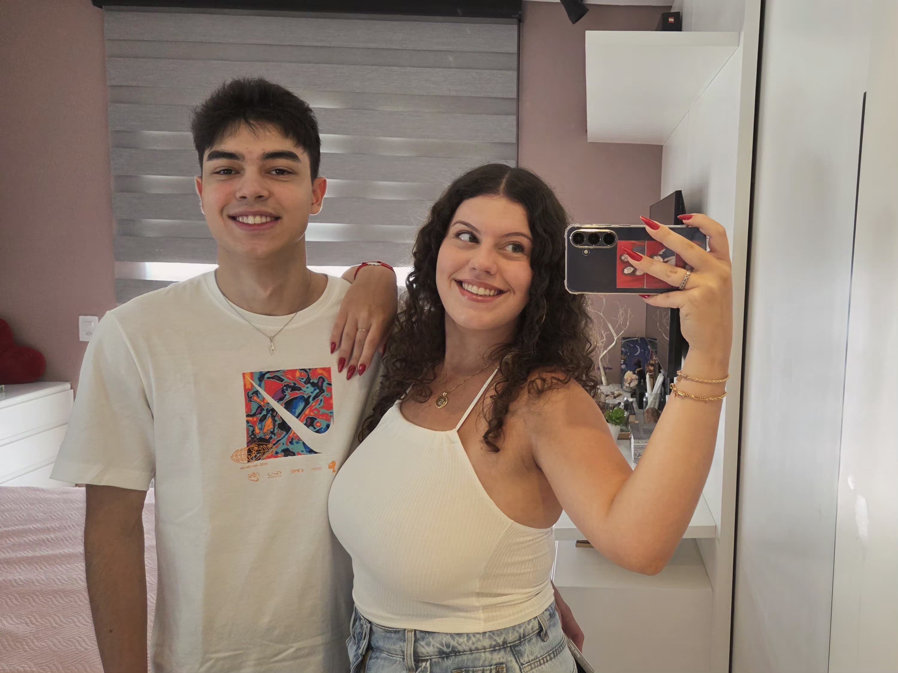

O aniversário de namoro do melhor casal começa daqui
Eu nunca fui bom com palavras ou em demonstrar sentimentos, mas estar contigo me faz querer tentar. Essa foto foi tirada em 15 de julho de 2025, voltando do aniversário da Ana. Pode parecer só uma lembrança comum... mas pra mim, é um dos nossos pequenos grandes momentos.

No dia 7 de junho de 2025, fomos ao casamento de um parente seu. Eu nem sabia direito como me vestir, mas estava feliz — só por ir ao seu lado. A gente combina em tanta coisa, até quando o dia é dos outros, ele acaba sendo especial pra mim por estar contigo.

Essa foi tirada em 12 de fevereiro de 2025, depois de um dia incrível na Surfland em Garopaba. Nossa primeira "viagem" juntos e aquela sensação de que tudo está certo. Cada memória com você parece um dado importante que só o meu coração entende.

Voltando do aniversário da Ana de novo, só que dessa vez foi em 19 de julho de 2024. A gente nem imaginava tudo que ainda viveria junto. Fui com o moletom que você customizou pra mim, cheio de beijos seus — como se cada um deles me abraçasse o tempo todo. Isso sempre me lembra das cartinhas também 😭

Essa foi nossa primeira foto juntos. Eu nem gosto dela (e você adora), mas ela marca o começo de tudo. E mesmo que não seja minha preferida, é especial. Porque foi o início de algo que hoje eu não trocaria por nada.

Foi em 01 de dezembro de 2021, antes da festa do gremio. Eu estava nervoso, mas você me deu coragem. E aquele beijo foi o começo de tudo que vivemos juntos.
Foi em 05 de novembro de 2022, foi um pedido meio brega, mas foi sincero. E aquele momento marcou o início do nosso namoro, que é o que mais importa.
Foi em 05 de novembro de 2023, sinceramente não lembro como que foi, provavelmente a gente tava estudando pra prova ou algo do tipo, mas o que importa é que a gente tava junto e isso é o que mais importa.
Um ano de cada vez, uma foto de cada capítulo

Foto tirada no sábado, 25 de fevereiro de 2023Ainda era tudo novo. Eu nem imaginava quantas fotos viriam depois dessa.

Foto tirada no sábado, 29 de junho de 2024Em 2024 a gente já tinha um jeito só nosso de estar junto.

Foto tirada na segunda, 27 de janeiro de 2025Ainda não sabíamos, mas a nossa primeira "viagem" estava logo ali.

Foto tirada no domingo, 8 de fevereiro de 2026Quatro anos e a gente ainda tem fotos novas pra tirar.
Desde o momento em que nossos caminhos se cruzaram, o tempo tem sido a mais bela das viagens.